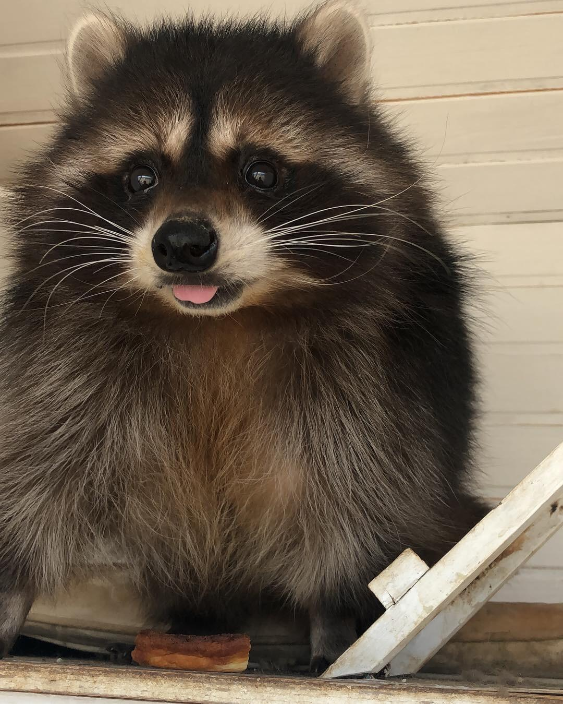

|  | O guaxinim, por vezes chamado rato-lavadeiro (Procyon lotor) é um mamífero da família dos procionídeos bastante parecido com o Procyon cancrivorus (espécie sul-americana). Estes animais são encontrados nas Américas e são conhecidos também pelo nome estadunidense raccoon. No Brasil, "guaxinim" e "jaguacinim" referem-se a vários Procionídeos, especialmente ao Procyon cancrivorus. Existem também na Europa central e no Cáucaso e no Japão, onde se estabeleceram após fugas de indivíduos vindos de outras regiões. |
Conteúdo |
Factos
TamanhoGuaxinins são tão grandes quanto pequenos cães. Eles crescem para cerca de 23 a 37 polegadas (60 a 95 centímetros) e pesam 4 a 23 libras. (1,8 a 10,4 quilos), de acordo com a National Geographic. HabitatGuaxinins são encontrados na América do Norte e Central, Europa e Japão. Eles são muito adaptáveis, então eles vivem em uma ampla gama de climas e habitats. Eles costumam fazer casas, chamadas de tocas, em árvores ou cavernas, embora também façam casas em celeiros, veículos abandonados e outros locais construídos pelo homem, de acordo com a New Hampshire Public Television. Embora os guaxinins fiquem mais do que felizes em transformar suas áreas humanas em casas, eles podem ser cruéis quando abordados por seres humanos. Os seres humanos devem ser particularmente cautelosos em se aproximar dos guaxinins porque eles são portadores comuns de raiva, lombrigas e leptospirose, de acordo com a The Human Society. A maioria dos especialistas não recomenda ter um guaxinim como animal de estimação. HábitosGuaxinins não são criaturas muito sociais. Eles são noturnos e dormem durante o dia. Durante o inverno, eles tendem a dormir mais, mas não hibernam no sentido tradicional. Eles simplesmente dormem enquanto seus corpos vivem da gordura armazenada. Eles perdem cerca de 50% de seu peso corporal durante o inverno, de acordo com a Animal Diversity Web (ADW) da Universidade de Michigan. Embora estes animais se pareçam com os bandidos do ar livre, os guaxinins são criaturas muito limpas. Eles são conhecidos por lavar a comida em riachos e até mesmo cavar latrinas em áreas que frequentam regularmente. DietaComo omnívoros, os guaxinins comem vegetação e carne. A vegetação em sua dieta consiste de cerejas, maçãs, bolotas, caquis, frutas vermelhas, pêssegos, frutas cítricas, ameixas, uvas silvestres, figos, melancias, faia, milho e nozes. Quando se trata de carne, os guaxinins consomem mais invertebrados do que os vertebrados, de acordo com o ADW. Alguns dos deleites favoritos dos animais do guaxinim são rãs, peixes, lagostins, insetos, roedores e ovos de pássaros. Quando a comida é escassa, os guaxinins não estão acima de catar lixo humano ou comer animais atropelados. |
|---|